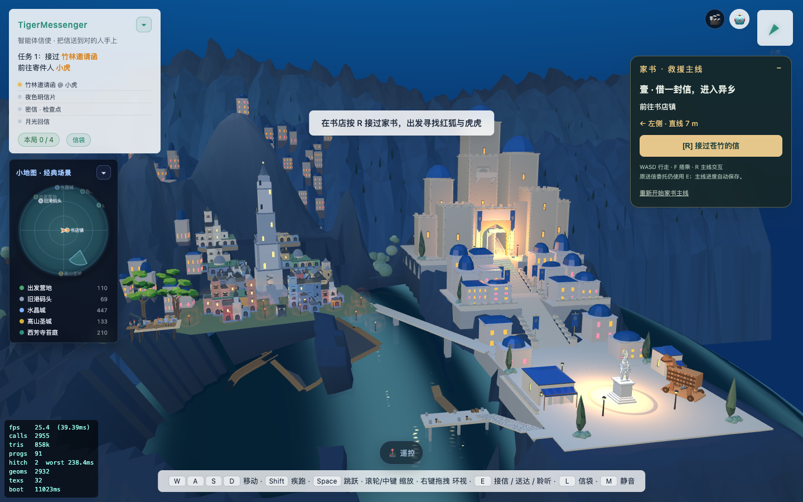
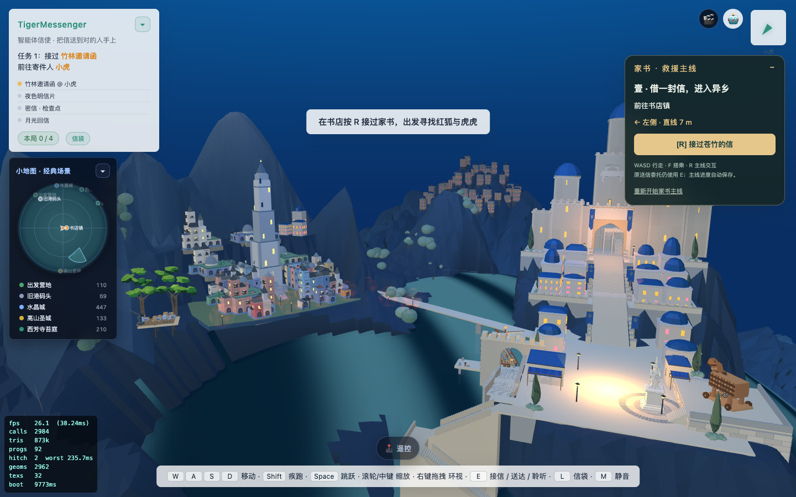
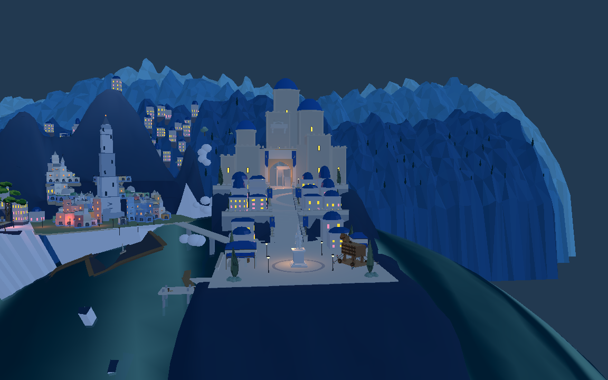

已接入8931原游戏并同步Godot。原港口、木马、雕像、桥梁和剧情对象保留。两处原岩柱的射线首个命中都已变为全球海面。



Godot仍有额外浅色残块、白云与岸面色差，需继续定位；本轮没有将它们算作清理完成。
网页2561通路采样通过，Godot原短剑兵734点路线到达。未验证完整舰队航线或整场战斗。旧纳沃纳槽底、折线步道、灯位与宽平台仍需继续调整。
实景射线证据 · 网页通路 · Godot通路 · 进入8931原游戏